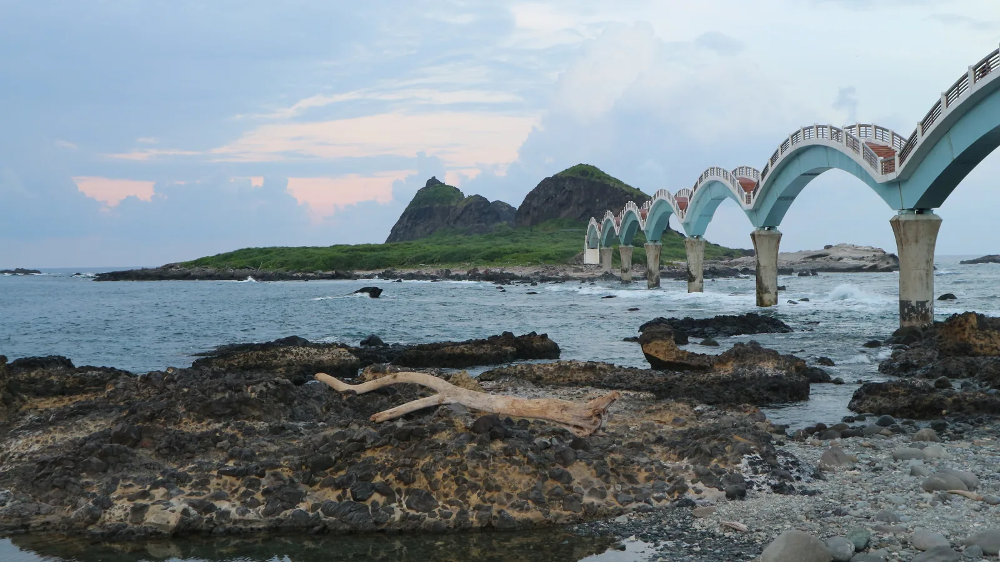

타이동에서 여행자들이 직접 찾아가 등록한 카페 맛집 14곳을 모았어요. 이름을 눌러 상세 페이지에서 위치와 구글맵 링크를 바로 확인해보세요.
대만 동부 해안의 슬로우 라이프 도시. 태평양과 중앙산맥 사이 좁고 긴 평야에 논밭과 목장이 펼쳐져 있고, 매년 여름 루예고원 열기구 축제로 유명해요. 원주민 문화와 느긋한 해안 드라이브를 즐기기 좋은 곳이에요.
대만, 특히 타이중은 카페 밀도가 높기로 유명합니다. 스페셜티 원두를 다루는 로스터리형 카페부터 오래된 건물을 개조한 인테리어 맛집까지 스타일이 다양하고, 대부분 좌석 회전에 여유가 있어 오래 머물기 좋아요.
타이동 카페 맛집 목록
Join the map
지금 등록하기 →
나만의 맛집을 공유해주세요 🤫
여러분의 발견이 다른 여행자들에게 진짜 대만을 경험하게 해줍니다.